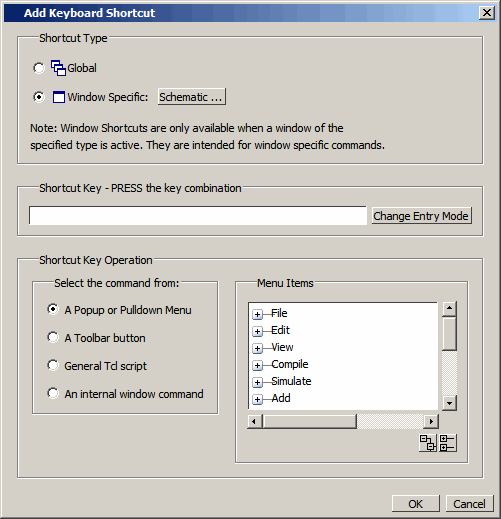

You can
create your own shortcut that is either global or that applies only
to a specific window.
Procedure
- If you
are creating a window specific shortcut, the window must have been
opened sometime during the simulation run.
- Open the Add Keyboard
Shortcut dialog box by selecting .
- Click
the Add button to open the
Add Keyboard Shortcut dialog box.
Figure 1. Add Keyboard Shortcut
Dialog Box
- Select the Shortcut Type, either Global or
Window. If you are creating a window specific shortcut, click the
window button to open the Select Window
Type dialog box. The dialog box displays every window
that has been opened during the current simulation. If you do not
see the window you are looking for, close both dialog boxes, open
the window you want by entering view <window>
on the command line, or by selecting the window from the View menu. Choosing Global or a specific
window changes the options available in the Shortcut
Key Operation field and the dynamically populated field
to the right.
- Enter
the key combination in the Shortcut Key field.
Or select the Change Entry Mode button
to enter a key combination.
- Choose
the type of operation the shortcut will execute.
A
Popup or Pulldown Menu — Opens the Menu
Items dialog with a hierarchical list of all popup and
pulldown menu items available either globally or for the window
specified in step 4.
A
Toolbar button — Opens the Toolbar Buttons dialog with a hierarchical
list of all toolbar button actions available either globally or
for the window specified in step 4.
General
Tcl script — Selecting this option opens the Tcl Script field to the
right. You can enter any Tcl script or command line sequence.
An
Internal window command — This choice is available only for window
specific commands. Refer to step 4. Opens the Window Action dialog
on the right with a list of all window specific commands.